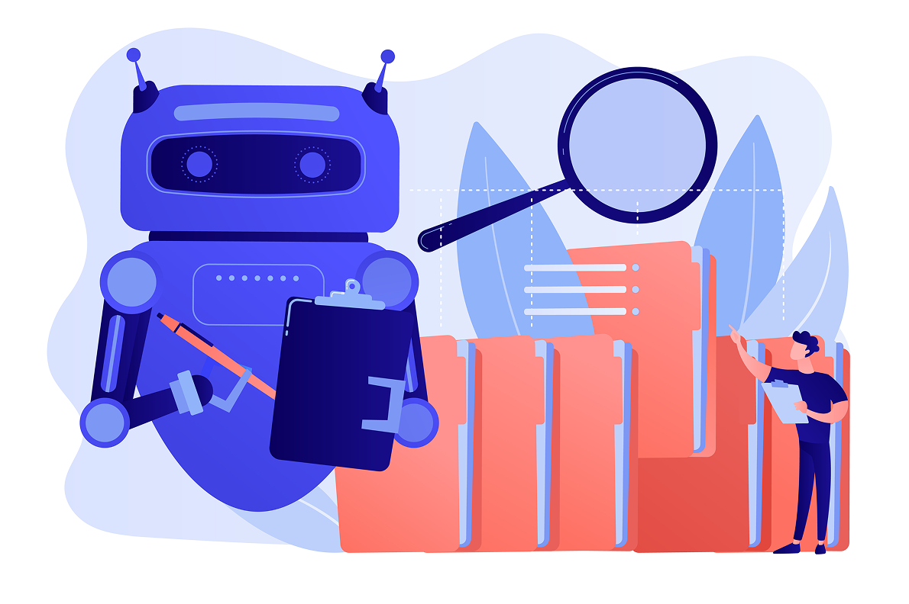
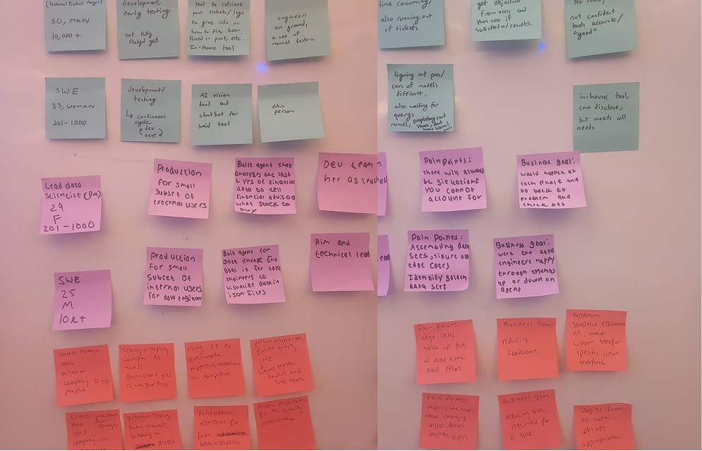
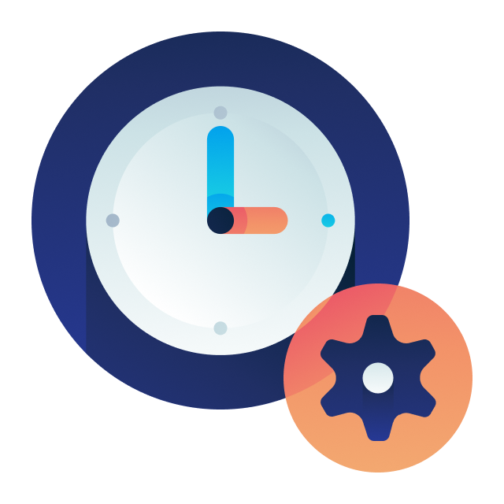

Stealth AI UX Research Report
Introduction
For my UX research course, I worked within a group of three conductung user experience research for a startup company working on developing tools that can aid in the evaluation process of AI and LLM technologies and outputs.
Our research was focused on users who work with evaluating, managing, and development of AI technologies.
View full report
Research Objectives
- Validate assumption that TPMs and SWEs would be the target audience.
- Validate product assumption that the solution should be enabling non-technical roles with a nuanced set of statistical, software and product skills to evaluate, launch, and monitor performance.
- Uncover critical experience gaps that solutions could solve for.
- Identify minimum and ideal functionality for PM/SWEs to consider and adopt evaluation tools.
- Identify gaps in current home-built tools / 3rd party tools to identify product differentiation.
- Identify perceived adoption friction points for a new tool.
Current Pain Points
- Evaluating LLMs rigorously and meaningfully requires machine learning expertise, which is expensive and hard to come by.
- Not all team members who are involved in the process have technical/coding expertise. For instance Project Managers, Product Managers, UX designers, etc.
Data Collection and Methodology

- 6 interviews conducted.
- Remote moderated.
- Each interview lasted 45 minutes.
- Users recruited through Userinterviews.com.
- Using interview data, evaluated and identified trends.
Key Findings
- Target users are TPMs, SWEs, and PMs: TPMs and SWEs drive AI feature implementation and testing, and PMs deploying AI agents as consultants.
- AI evaluation is largely manual, leaving edge cases unaddressed and making quantitative metrics difficult for non-TPMs to define.
- No standardized AI launch criteria: Most features are manually tested and iterated post-deployment. This creates an opportunity to define and deliver minimum launch requirements for users.
- AI Evaluation tools need to be time saving, reduce token usage and account for edge cases.
Takeaways - Development
Those responsible for evaluation, PMs and SWEs, had a difficult learning curve for evaluation technology.
- 4 of 6 users stated the it was the responsibility of of the SWEs developing the AI technology.
- Of the 6 users, only 1 product manager was responsible for AI quality.
Half of users reported poor hand off between who's writing the prompt and how to prompt. 1 user had to learn new technology they were unprepared for because of this.
"The DevOps and the developer responsibilities were not clear. The developer was managing all the variable setting, all the task definition settings that were not initially designed for the developer to perform."- P2
One major pain point was edge cases and obtaining data that can aid in those edge cases. Furthermore, Edge case detection was also the most time consuming aspects of the workflow.
"Is it because of the limitations of the testing environment or are we doing something complicated in the logic that is making it run super hard for some reason and stuff like that." - P3
"80% of the flows are very easy to foresee and we fix it very easily. But it's just like the 20% that again consumes 80% of the time to fix it."- P4
Takeaways - Evaluation
6 of 6 users stated that "manual evaluation", e.g. manually coming up with prompts, inputting them over and over, coming up with with metrics to grade outputs, reviewing logs, took up a significant amount of time.

"You have to manually verify each and every output"- P2
"We always have like a long list of test cases that we need to manually evaluate one by one"- P3
4 of 6 users stated that finding and testing for edge cases was a significant pain point in their workflow.
All users reported using in house tools in order to evaluate their AI Agents. 2 users reported testing against sample data with Python Scripts and Excel.
Users completed manual evaluations for the following reasons:
- Skeptical of AI’s ability to evaluate based on early adoption.
- Dealing with confidential information.
- Users required custom workflow for clients.
"Manual testing has to be done. That's non negotiable. But there's no framework or UI testing that we used to do a couple of years back, like a framework kind of thing."- P2
[Manual Review] "It's super time consuming, despite having a ton of testing, the flow still breaks." - P4
"I would say it's mostly manual. Yeah. Because weird, like, how would you know if it's good if they can't use AI? Because if the AI is good enough to evaluate it, then that AI must be good enough to make it."- P3